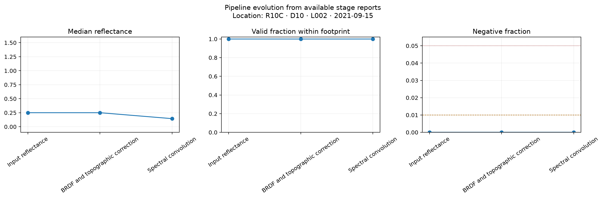

Overall status: WARN
| Stage | Status | Footprint / bounding box | Valid within footprint | Median reflectance | Negative fraction | All-band >1.2 | Usable-band >1.2 | Known bad bands retained | Correction |Δ| q99 | Readable tables |
|---|---|---|---|---|---|---|---|---|---|---|
| Source acquisition | PASS | — | — | — | — | — | — | — | — | — |
| Input reflectance | WARN | 0.571275 | 1 | 0.2504 | 0 | 0.0593153 | 1.41814e-05 | 68 | — | — |
| Correction parameters | WARN | — | — | — | — | — | — | — | — | — |
| BRDF and topographic correction | WARN | 0.571275 | 1 | 0.2504 | 0 | 0.0593168 | 1.41415e-05 | 68 | 0.00389395 | — |
| Spectral convolution | PASS | 0.571275 | 1 | 0.14445 | 0 | 1.43012e-05 | — | — | — | — |
| Parquet extraction and merge | PASS | — | — | — | — | — | — | — | — | 18 |

{
"stages": [
"Input reflectance",
"Correction parameters",
"BRDF and topographic correction"
]
}{
"stages": [
{
"stage": "Input reflectance",
"known_bad_band_count": 68,
"classification_mode": "report_only_no_masking",
"data_modified": false
},
{
"stage": "BRDF and topographic correction",
"known_bad_band_count": 68,
"classification_mode": "report_only_no_masking",
"data_modified": false
}
]
}[
{
"diagnostic": "sensor_triangle_path_and_cycle_consistency",
"reason": "No fitted translation-edge artifacts are produced by the canonical NEON processing run."
},
{
"diagnostic": "landsat_direct_nbar_comparability",
"reason": "Direct Landsat Collection 2 NBAR is acquired outside this NEON flightline pipeline."
}
]